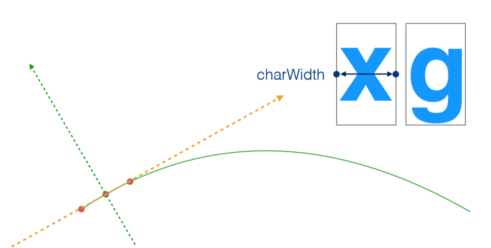

SVG text
0. 前言
人类的交流，是通过文字语言来交流的，所以光靠SVG图形是难以意会的。SVG支持文本，但它是有限的，实际上SVG是把文本信息当作图形来渲染处理，不像css那样支持排版，如果需要对文本进行排版（例如换行），则需要手动计算和控制。
1. <text>和<tspan>创建文本
这两个标签是在SVG中使用的基本文本标签。
1.1 <text>
- x 和 y 属性 - 定位标准
- dx 和 dy 属性 - 字形偏移
- style 属性 - 设置样式
接下来通过实例来了解以上属性。首先观察x、y属性。
<svg xmlns="http://www.w3.org/2000/svg">
<!-- 绘制栅格 -->
<defs>
<pattern id="grid" x="0" y="0" width="20" height="20" patternUnits="userSpaceOnUse">
<path stroke="blue" fill="none" d="M0,0 H20 V20">
</path>
</pattern>
</defs>
<rect width="800" height="400" fill="url(#grid)"></rect>
<text x="20" y="20">简单文本</text>
</svg>
以上代码通过<pattern>元素绘制了栅格，每个格子的大小是20X20，方便进行定位和观察。然后定义了一个text元素，位置为（20，20），所以x、y决定了文本元素的位置。然后，仔细观察画布，text元素的左下角位置才是（20，20），所以可以得出text元素的基准点为元素的左下角？其实不然。我们通过style属性设置css样式，再来观察一下。
<svg xmlns="http://www.w3.org/2000/svg">
<defs>
<pattern id="grid" x="0" y="0" width="20" height="20" patternUnits="userSpaceOnUse">
<path stroke="#c0c0c0" fill="none" d="M0,0 H20 V20">
</path>
</pattern>
</defs>
<rect width="800" height="400" fill="url(#grid)"></rect>
<text x="100" y="100" style="font-size: 50px">简单文本</text>
<path d="M100,0 V200, M0,100 H200" stroke="red"></path>
</svg>
仔细观察一下就能发现，文本并没有以左下角为基准往点（100，100）进行对齐，而是稍微往下一点。这里涉及到基准线问题。（baseline，css中也有类似的概念）
<svg xmlns="http://www.w3.org/2000/svg">
<defs>
<pattern id="grid" x="0" y="0" width="20" height="20" patternUnits="userSpaceOnUse">
<path stroke="#c0c0c0" fill="none" d="M0,0 H20 V20">
</path>
</pattern>
</defs>
<rect width="800" height="400" fill="url(#grid)"></rect>
<text x="100" y="100" style="font-size: 50px">T 文本</text>
<path d="M100,0 V200, M0,100 H200" stroke="red"></path>
</svg>
如果文本文字是英文字母，则是正常的左下角对齐。出现这种情况的原因是，汉字字体在被设计时由于某种原因，没有以文本基线（图中红色的横线）为最底线进行设计，从而导致的对齐问题。当然这是默认状态，通过css dominant-baseline属性我们可以对其进行修改以达到想要的排版效果。
接着观察dx、dy属性。
<svg xmlns="http://www.w3.org/2000/svg">
<defs>
<pattern id="grid" x="0" y="0" width="20" height="20" patternUnits="userSpaceOnUse">
<path stroke="#c0c0c0" fill="none" d="M0,0 H20 V20">
</path>
</pattern>
</defs>
<rect width="800" height="400" fill="url(#grid)"></rect>
<text x="20" y="20" dx="10" dy="10">简单文本</text>
</svg>
设置text元素dx=”10”、dy=”10”后，肉眼可以观察到文本整体往下和往右偏移了10个单位。所以dx、dy属性控制文本的偏移。有趣的是，dx、dy接受一个数列，数列按照文本的顺序逐个应用到文本的每个字符上。如下所示：
<svg xmlns="http://www.w3.org/2000/svg">
<defs>
<pattern id="grid" x="0" y="0" width="20" height="20" patternUnits="userSpaceOnUse">
<path stroke="#c0c0c0" fill="none" d="M0,0 H20 V20">
</path>
</pattern>
</defs>
<rect width="800" height="400" fill="url(#grid)"></rect>
<text x="20" y="20" dx="10 10 10 10" dy="10 10 10 10">简单文本</text>
</svg>
这两个属性可以更好的控制单个文字的位置以获得各种效果，例如波浪线文字等等。
最后是style属性。作为文本节点，最关键的便是它的字体部分。所以SVG提供了一些属性，类似于它们的CSS同行，用来激活文本选区。下列每个属性可以被设置为一个SVG属性或者通过style属性成为一个CSS声明：font-family、font-style、font-weight、font-variant、font-stretch、font-size、font-size-adjust、kerning、letter-spacing、word-spacing和text-decoration。
1.2 <tspan>
<tspan>标签用来标记大块文本的子部分，它必须是一个text元素或别的tspan元素的子元素。一个典型的用法是把句子中的一个词变成粗体红色。
<svg xmlns="http://www.w3.org/2000/svg">
<text x="20" y="20">简单<tspan font-weight="bold" fill="red">红色</tspan>文本</text>
</svg>
<tspan>标签同样拥有x、y、dx、dy、style属性，与<text>标签不无二致，因此不再赘述。
2.<textPath>让文本在指定路径上排列
2.1 使用方法
简单地说，该元素利用它的xlink:href属性取得一个任意路径，把字符对齐到路径，于是字体会环绕路径、顺着路径走。使用如下：
<svg xmlns="http://www.w3.org/2000/svg" width="800" height="400">
<path id="path" d="M100,200 Q200,100,300,200 T500,200" stroke="rgb(0,255,0)" fill="none"/>
<text style="font-size: 24px">
<textPath xlink:href="#path">这个文本先上去了，又下来了。Upside down in Englise!</textPath>
</text>
</svg>
2.2 渲染原理
结合图解来简单了解下textPath元素的渲染原理。
首先，准备一条path和两个等待渲染的字符x和g。
第一步，浏览器从字符表中查到字符所占的宽度chartWidth。
第二步，以path的起点作为渲染的起点，再根据chartWidth的宽度往后取得一个合适的点作为结束点，以这两个点作为计算的基点。
第三步，在起始点和结束点构成的路径中取得中点。

第四步，以此中点为准，获取该点得切线与法线。
第五步，把字符得中央对齐到法线，以及把字符的基线对齐到切线上，随后进行渲染。
第六步，以上一个字符渲染位置的结束点作为下一个字符渲染的起始点，重复步骤一 ~ 五，实现整个文本的渲染。
以上大概就是textPath元素的渲染原理。
2.3 定位属性 x, y, dx, dy, text-anchor, startOffset 的作用
x: 决定了文本在路径上渲染的位置起始点。
y: 不起作用。
dx: 与x相似。
dy: 决定文本字符在法线方向上的移动距离。
text-anchor: 文本与所给点的对齐方式 （开头、中间、末尾对齐）。
startOffset: 起始点的偏移值（%）。
下面是方便理解粗略可交互例子：
<!--
* @Description:
* @Author: Do not edit
* @Date: 2019-09-20 16:54:28
* @LastEditors: liyc
* @LastEditTime: 2019-09-21 20:05:18
-->
<!DOCTYPE html>
<html lang="en">
<head>
<meta charset="UTF-8">
<meta name="viewport" content="width=device-width, initial-scale=1.0">
<meta http-equiv="X-UA-Compatible" content="ie=edge">
<title>Document</title>
<style>
.svg-conatiner {
width: 100%;
height: 400px;
}
</style>
</head>
<body>
<form id="ctrl">
<label for="x">x:</label>
<input ctrl="x" name="x" type="range" value="0" min="-200" max="200">
<br />
<label for="y">y:</label>
<input ctrl="y" name="y" type="range" value="0" min="-200" max="200">
<br />
<label for="dx">dx:</label>
<input ctrl="dx" name="dx" type="range" value="0" min="-200" max="200">
<br />
<label for="dy">dy:</label>
<input ctrl="dy" name="dy" type="range" value="0" min="-200" max="200">
<br />
<label for="text-anchor">text-anchor:</label>
<select name="text-anchor" ctrl="text-anchor">
<option value="start" selected>start</option>
<option value="middle">middle</option>
<option value="end">end</option>
</select>
<br />
<label for="startOffset">startOffset:</label>
<input name="startOffset" ctrl="startOffset" type="range" value="0" min="0" max="100"></input>
<br />
<button type="reset">Reset</button>
</form>
<div class="svg-conatiner">
<svg xmlns="http://www.w3.org/2000/svg" width="800" height="400">
<path id="path" d="M100,200 Q200,100,300,200 T500,200" stroke="rgb(0,255,0)" fill="none" />
<text style="font-size: 24px">
<textPath xlink:href="#path">Upside down in Englise!</textPath>
</text>
</svg>
</div>
<script>
var ctrl = document.getElementById('ctrl')
var text = document.querySelector('text')
var textPath = text.firstElementChild
function update(target) {
var attr = target.getAttribute('ctrl');
if (!attr) return
if (attr === 'startOffset') {
textPath.setAttribute(attr, target.value + '%')
} else {
text.setAttribute(attr, target.value)
}
}
ctrl.addEventListener('input', function (e) {
update(e.target)
})
ctrl.addEventListener('reset', function (e) {
setTimeout(function () {
var list = document.querySelectorAll('#ctrl *[ctrl]');
[].slice.call(list).forEach(update);
})
})
</script>
</body>
</html>